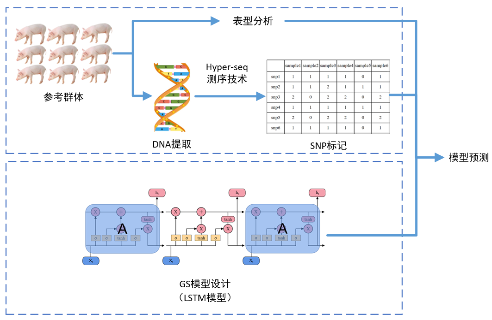
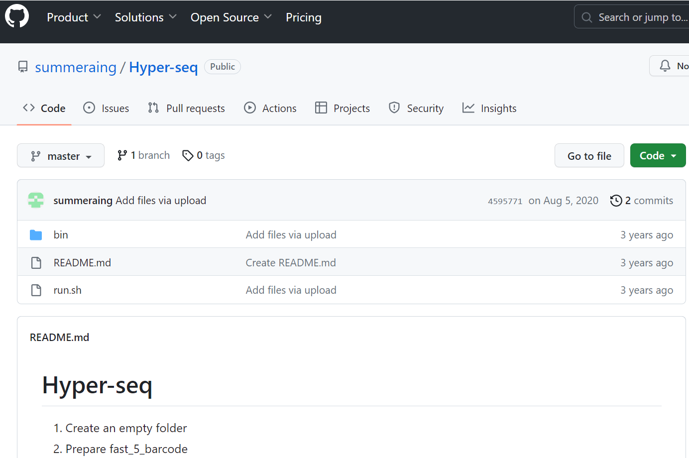
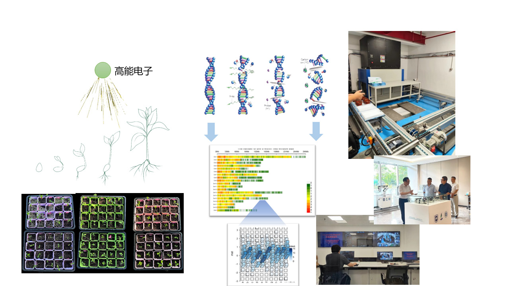
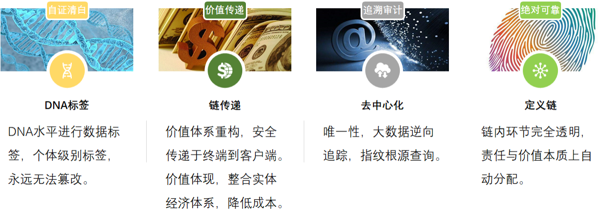
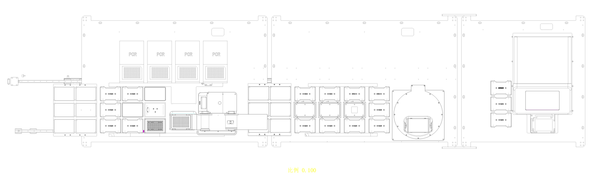
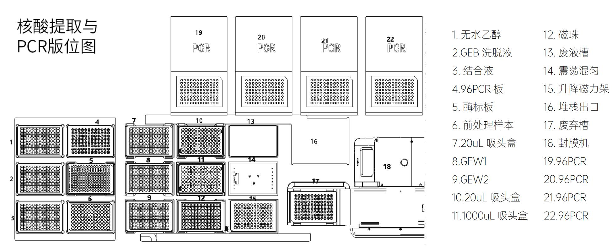

AI生信科学家
全自动、自规划的多组学分析智能体

多组学分析智能体
面向基因组、转录组、重测序、表观组等多组学数据，自动规划分析路径并生成结构化结果。
智能规划分析全流程
- 上传数据后，AI智能体自动识别项目类型
- 规划并执行最优分析路径
- 覆盖基因组、转录组、重测序、表观组等多组学整合分析
- 支持自定义分析策略，灵活适配基础研究、育种开发等场景
智能解读与报告自动生成
- AI驱动深度数据挖掘：变异影响、基因功能、通路网络
- 自动生成出版级图表与结构化分析报告
- 持续整合最新公共数据与算法
- 提升解读深度和准确性
平台技术特色
- 全流程自动化：从原始数据到生物洞见，全程无人值守运行
- 环境自适配：自动配置计算环境，告别手动安装与调试
- 透明可重复：提供完整分析日志与可复现脚本
- 模块化扩展：轻松集成用户自有工具与流程
核心业务流程
总控项目需求、权限、资源配额
自动生成分析脚本计划
运行生物信息分析任务
校验数据质控与结果
输出整理好的结果
交付价值
您提供数据，AI 规划一切。系统通过 supervisors、planners、workers、reviewers、evidence、delivery 六层协同，将项目需求、知识库检索、脚本执行、结果审核、证据留存和报告交付串成完整闭环，让生信分析像使用智能手机一样简单。
应用案例
多组学数据集成分析
成功整合全基因组、转录组和表观组数据，发现关键基因调控网络。
育种材料评估
快速鉴定育种材料的遗传背景和性状相关基因。
性状相关基因挖掘
从复杂的重测序和多组学数据中自动发现产量、品质、抗逆等性状相关候选基因。
重测序自动流程
自动完成质控、比对、变异检测、注释、富集分析和报告生成，保留完整日志与可复现脚本。
典型结果
出版级可视化图表
自动生成符合学术期刊标准的高质量图表
结构化分析报告
完整的数据分析报告，包含方法学描述和结论
可复现分析流程
提供完整的分析脚本和日志，支持结果追溯
HSmaster植物基因分型系统
高通量、高精度的植物基因分型解决方案

HSmaster 全自动建库工作站
整合移液、PCR、酶标、抓手、堆栈、温控、振荡和离心模块，实现从核酸提取到建库的一步到位。

自动化建库流程
覆盖样本制备、核酸提取、PCR体系构建、文库纯化与质控，减少手工操作误差。

文库流水线
三台独立工作站串联完成核酸提取、PCR 体系构建、文库纯化，适配高通量批量生产。
系统特色
- 高通量样品处理，全自动无人值守
- 核酸提取、PCR扩增、文库质检全流程覆盖
- 兼容 KASP 标记，模块化配置更灵活
- Hyper-seq 技术加持，实现低成本建库
应用领域
- 作物遗传育种
- 种质资源评估
- 品种鉴定与纯度检测
- 分子标记辅助选择
自动化设备模块
- 植物样本制备模块：深孔板、裂解液和高速匀浆机完成破壁匀浆
- 核酸提取和 PCR 模块：集成磁珠法、负压膜法、PCR、封膜和移液系统
- 文库制备模块：自动化定位离心、低温、振荡、耗材堆栈和移液操作
- DNA 浓度检测模块：全波长光吸收酶标仪检测 DNA 浓度
应用案例

深度学习 GS 育种
将 Hyper-seq 低成本基因测序与 LSTM 等预测模型结合，实现早代选择和精准育种决策。

回交育种
低成本、高通量筛选回交群体遗传背景，支持标记辅助选择和目标材料鉴定。

诱变育种
检测诱变造成的全基因组变异热区，辅助抗逆新品种开发和诱变机制研究。

DNA 水平溯源检验
建立动植物全基因组扫描体系，为引进物种鉴定、有害生物预警和来源追溯提供 SNP 指纹数据。
技术参数
基础规格
| 尺寸 | 3400 x 890 x 2140 mm |
| 净重 | 2.5T |
| 电源 | 100V-120V / 200V-240V AC，50/60Hz |
| 版位数 | 60 |
| 通信接口 | 3 个 USB，1 个以太网口 |
| 显示方式 | 20 寸触摸屏 |

设备板位图
多模块板位布局适配批量样本处理与耗材自动调度。

核酸提取与 PCR 板位
支持核酸提取、PCR体系构建和下游建库流程连续运行。

配套生信流程
支持大规模基因型数据拆分、比对、SNP 检测和下游育种分析。